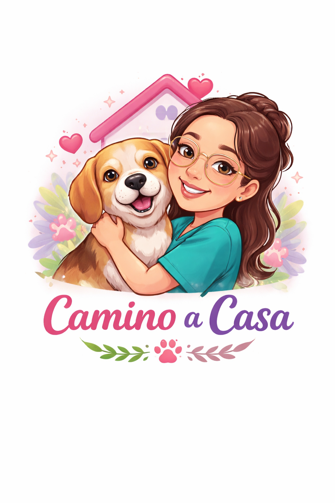

💰 Donar
Apoya con aportes.
"Adoptar cambió mi vida y la de mi Moka 💕"

Este proyecto nació gracias a mi perrita Moka 💕 Ella cambió mi vida completamente, y me inspiró a ayudar a otros animales a encontrar un hogar lleno de amor.
Participa en sesiones con mascotas para reducir el estrés. Un espacio lleno de amor, calma y conexión.
UnirmeSé parte de nuestro programa de hogar transitorio. Puedes cuidar temporalmente a una mascota mientras encuentra su familia definitiva 💕
Quiero ayudar